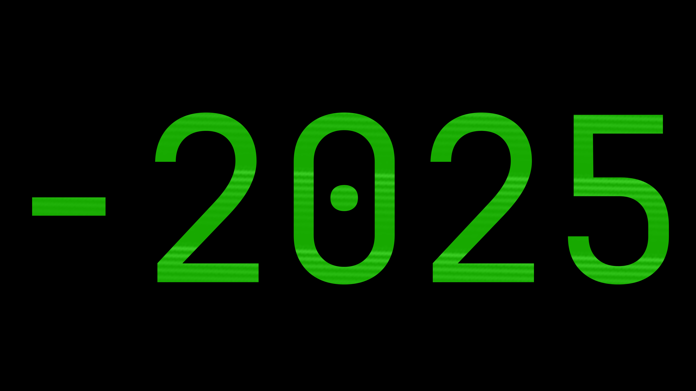
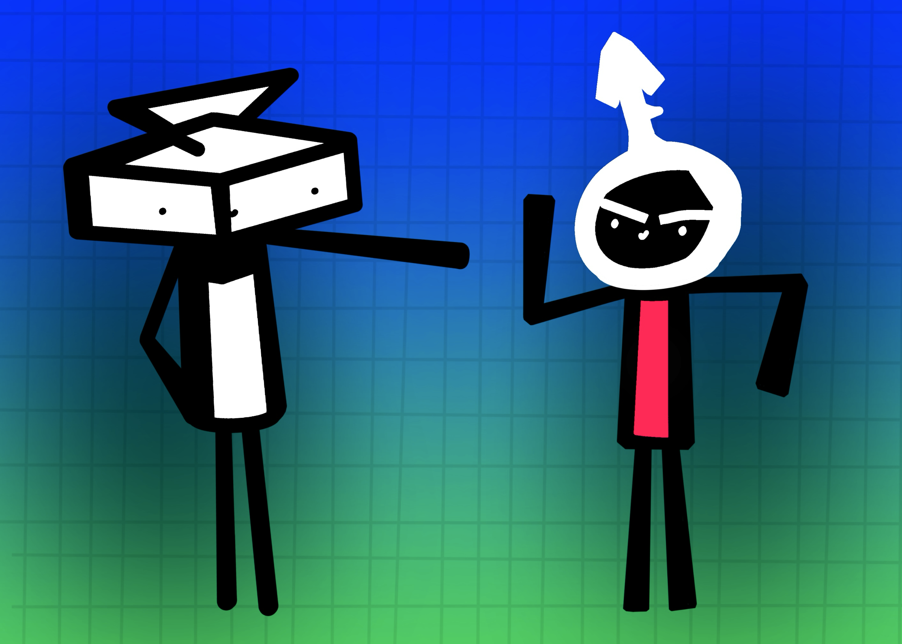
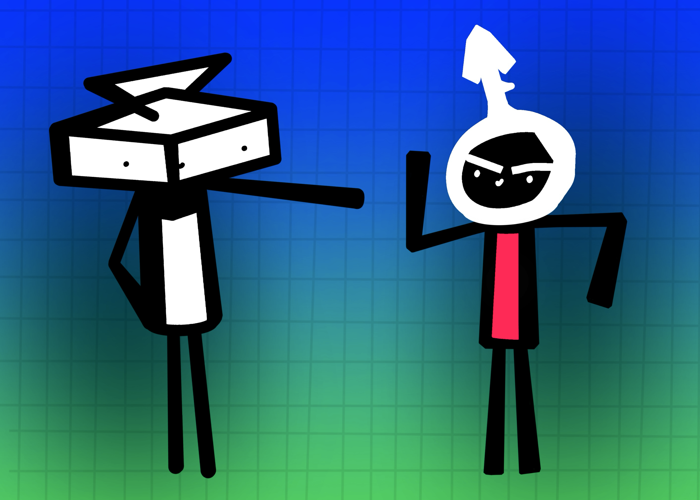

2026
1-1-2026
2020 was 6 years ago.
table of contents
Happy New Year.
2020 was 6 years ago.
2018 was 8 years ago.
I can't wrap my head around that. It feels impossible. But it's real, so that brings us to the question:
How was 2025?
a review on 2025
the good
In 2025, I believe I really got to recognize my skills. I started writing the novel. I learned to program. I learned new art techniques and developed my own art style.

 

The novel document, number clicker source code, and thingymajigy I drew with cubeman and vrooman
Old me from late 2024 would've never envisioned how far I've gotten in programming skills.
Or the sheer amount words I would write in the novel from April to July.
I also developed my own musical taste at around the same time I started the novel. Before,
I didn't really listen to music or have a playlist or anything. Now I do.
yinlies, my mega-playlist
I also did a lot of screwery with tech which was a learning expierence. I tried to turn my old iMac into a home server over the summer for about 2 weeks. It failed. I learned about Linux and open-source software. Now I use LibreOffice and VSCode and my laptop's OS is Linux.

a lil' too much EFI Boot on the iMac
the bad
In 2025, a certain person entered a very important office. Their actions
caused problems for my parents (especially my mother) and it's made them
consider returning to the Dominican Republic.
Which sucks, because as much as I dislike what's happening,
(that) country is home for me. I was born there and live there.
The AI "bubble" (or whatever it is, really) is getting more and more noticeable
and also quite annoying to me. AI slop content genuinely makes my blood boil
every time I see it. I don't want to see it.
There's these ambiance videos on YouTube that are literally AI Inception: AI
video on top of an AI audio (also with AI lyrics in some cases) and AI title...
it goes on. It's all generated, and people fall for it.
Tutorials on how to make such videos
so what now?
I'm not done learning. I'll keep writing the novel, getting better at programming,
and practicing my art skills. And I want to learn new skills, too. I was able
to learn how to program so quickly, why can't I do that with something else?
2025 was more than bearable. And I have a feeling 2026 will be even better.
For me, and hopefully you too.